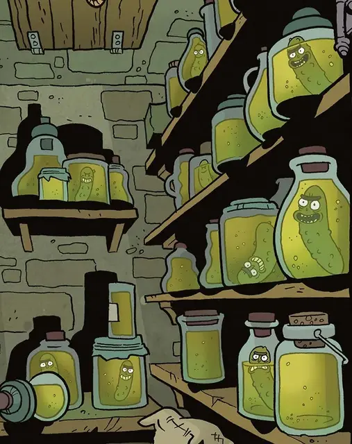

Ликантропурец
Lycanthropickle
Маленькое Растение, нейтрально-злое, именной НИП

Класс Доспеха 13 (природный доспех)
Хиты 4 (1к6 + 1)
Скорость 20 футов
| мод | спас | ||
|---|---|---|---|
| СИЛ | 6 | −2 | −2 |
| ЛОВ | 13 | +1 | +1 |
| ТЕЛ | 12 | +1 | +1 |
| мод | спас | ||
|---|---|---|---|
| ИНТ | 4 | −3 | −3 |
| МДР | 8 | −1 | −1 |
| ХАР | 3 | −4 | −4 |
Навыки Скрытность +3
Уязвимость к урону огонь
Иммунитет к состояниям глухота, ослепление
Чувства слепое зрение 60 футов (слеп за пределами этого радиуса), пассивное Восприятие 9
Языки Общий
Опасность 1/8 (25 опыта)
Бонус мастерства +2
Особенности
Языки. понимает Общий, но не говорит.
Обманчивая внешность. Пока ликантропурец остается неподвижным, он неотличим от маринованного огурца.
Проклятие ликантропурца. У гуманоидного существа есть 20-процентный шанс быть пораженным проклятием ликантропурца после ранения ликантропурцом. Проклятие длится 3 дня. Каждый продолжительный отдых, который существо проводит в чане или банке с рассолом для маринования, продлевает действие проклятия на 1 день.
Ликантропурец может либо противостоять своему проклятию, либо принять его. Сопротивляясь проклятию, ликантропурец сохраняет свое нормальное обличье и личность, находясь в гуманоидной форме. Он живет своей скучной жизнью, как и всегда, глубоко пряча свои яростные, кровожадные побуждения, как и все мы.
Некоторые люди не видят особого смысла в борьбе с проклятием и принимают себя такими, какие они есть. По желанию они могут принимать огуречную или гибридную форму. Большинство ликантропурцов, которые принимают свою рассольную натуру, поддаются жажде крови, становясь злыми, беспринципными существами, которые охотятся на слабаков.
В гибридной форме ликантропурец имеет ту же статистику, что и ветвистая зараза [twig blight], с измененной особенностью Обманчивая внешность.
В форме маринованного огурца ликантропурец не имеет статистики и неотличим от маринованного огурца... потому что это маринованный огурец.
Действия
Когти. Рукопашная атака оружием: +3 к попаданию, досягаемость 5 футов, одна цель. Попадание: 3 (1к4 + 1) колющего урона.